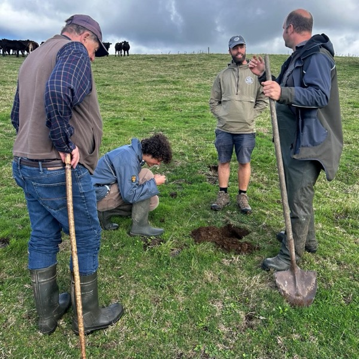

Spanning 26.8 hectares, Lesnewth is a registered habitat bank with 130 biodiversity units. Set within the River Valency landscape, the bank will help reconnect habitats around Cornwall’s rare Celtic rainforest, while providing off-site biodiversity net gain (BNG) units for development in the region.
Our team recently returned to Lesnewth to meet landowners Simon and Natsha and finalise plans for the next phase of habitat creation.

The focus is on restoring species-rich grassland and establishing new areas of native scrub. The first scrub planting is planned for later this year, with preparations underway for wildflower seed sowing next year alongside Simon’s local grazier.
Together with the site’s woodland, trees and Cornish hedgerows, these improvements will create a more varied, connected landscape with more food, shelter and space for wildlife.
Local partnerships, long-term restoration
Working closely with landowners and local people is central to how we create and manage our habitat banks. At Lesnewth, local knowledge and expertise are helping turn restoration plans into work on the ground.
“Biofarm brings together practical understanding of land and property with the ecological expertise to guide its restoration. They’ve made a complex process feel straightforward and given me confidence in what we can achieve together for the land and local wildlife.”
— Simon, Landowner at Lesnewth
- LocationNorth Cornwall, in the River Valency landscape
- Size26.8 hectares
- Biodiversity units130, registered
- HabitatsSpecies-rich grassland, native scrub, woodland, trees and Cornish hedgerows
Lesnewth is part of Biofarm’s growing national network of registered habitat banks. Its biodiversity units are backed by ring-fenced funding for 30 years of habitat management and monitoring.
Our wider network supports developers and Nationally Significant Infrastructure Project (NSIP) applicants with off-site BNG, combining local habitat delivery with the scale and long-term management needed for larger projects.
With the next phase of work approaching, Lesnewth is another example of what long-term partnerships can achieve for nature and local landscapes.